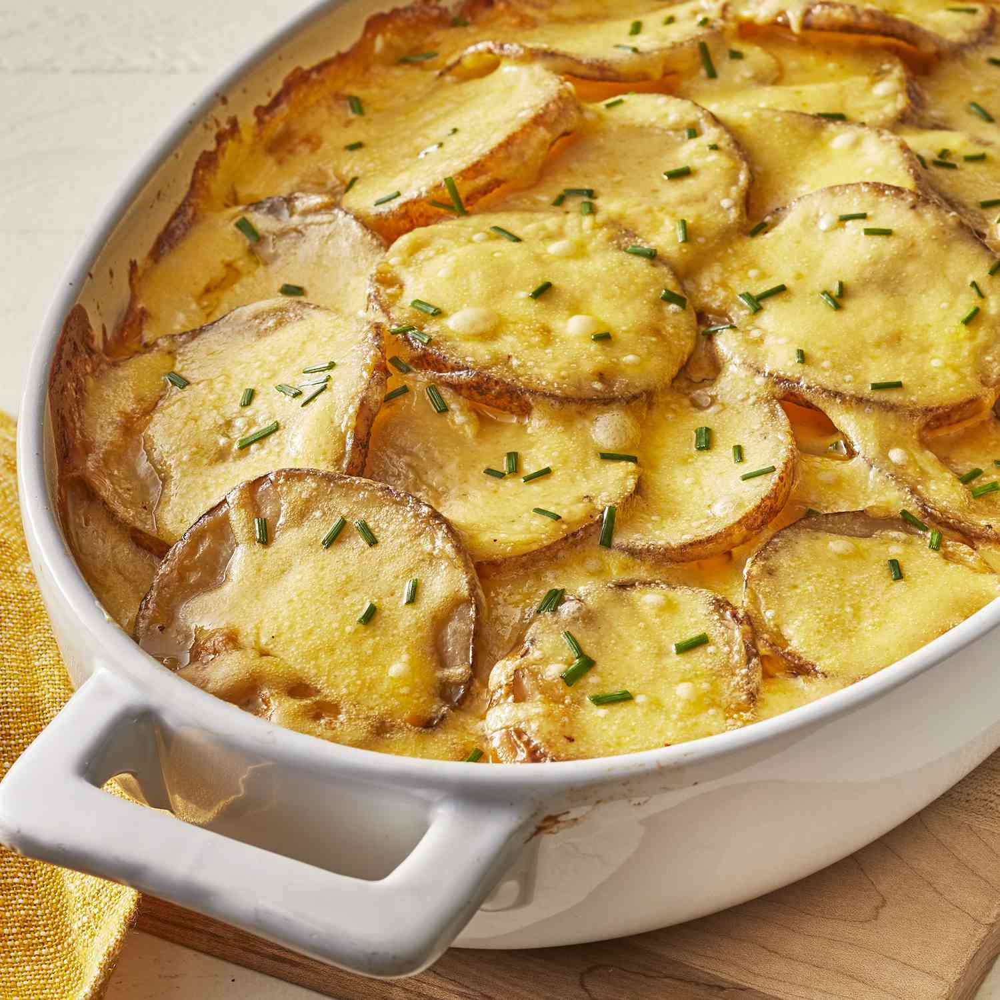

Creamy au Gratin Potatoes Recipe
Home

Description
The creamy cheese sauce and tender potatoes in this classic French dish make a delicious flavor combination. Experiment with different cheeses
for variety. Serve potatoes au gratin with a roast pork loin or beef tenderloin, alongside a green salad.
Ingredients
- Potatoes: This recipe starts with thinly sliced Russet potatoes. You can substitute Yukon gold, if you like.
- Onion: Slice one onion into rings to layer with the potatoes.
- Seasonings: These creamy au gratin potatoes are simply seasoned with just salt and pepper.
- Butter and flour: The cheese sauce starts with a roux made with butter and all-purpose flour.
- Milk: Make sure you slowly whisk in the milk to create the creamiest consistency.
- Cheese: Shredded Cheddar
Steps
-
Assemble the casserole: Layer half of the potatoes in the bottom of the prepared baking dish. Season. Layer onion slices over top, then top
with remaining potatoes. Season again.
-
Make the sauce: Melt the butter in a saucepan. Gradually whisk in flour and salt and cook for about 1 minute. Gradually whisk in the milk.
Cook, whisking constantly, until the mixture has thickened. Stir in the cheese.
-
Bake the casserole: Pour the sauce over the potatoes. Cover the dish with foil and bake in the preheated oven until the potatoes are tender
and the sauce is bubbling.
Original recipe found at
Creamy au Gratin Potatoes - allrecipes